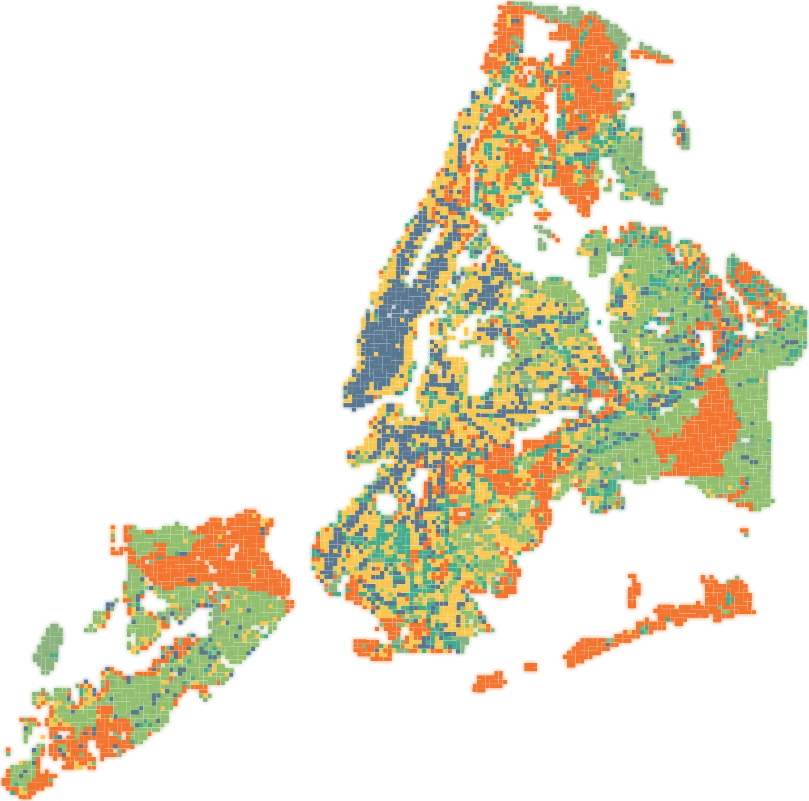
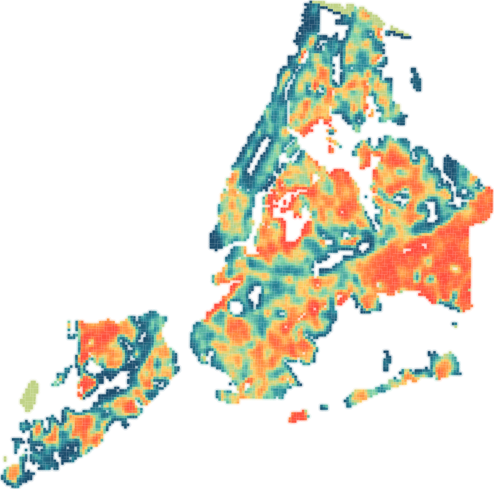

Heatscape NYC
An urban heat intervention planner. It maps a 250 m × 250 m grid over New York City and recommends, for every populated cell, the cooling intervention best matched to its context — derived from a causal systems diagram and a stack of geospatial layers.

Top-ranked intervention per populated cell · 10,081 cells · equal-weight basis
What you can do
- Priority score layer — composite risk from nine indicator categories, gated by residential population: no residents, no priority.
- Top intervention layer — every cell coloured by the cooling measure its context best supports.
- Category risk layers — any single category as a choropleth.
- Click a cell — its neighbourhood, priority, ranked interventions and all 43 indicators, each with a percentile bar against the rest of the city.
- Tune the weights — sliders for every category and every variable inside it; the map, scores and intervention ranking update live.
- Switch the weighting basis — Shapley attribution or equal weighting, with the disagreement between them made visible.
- Systems diagram — selecting a cell lights up every causal node it activates and animates the flow toward heat emergency.
Interventions ranked
Each cell's ranking is a weighted mean of directional risk percentiles across that intervention's factor set, gated by residential population.
Method
Weights you can argue with
Equal weighting encodes an assumption it cannot check: that every indicator matters as much as every other. Heatscape's default replaces that with an attribution. A fitted structural causal model decomposes the explained variance in heat-emergency incidence into each indicator's average marginal contribution across coalition orderings — its Shapley share — and those shares drive the sliders.
Shares are normalised within a category rather than globally. The decomposition is lopsided: four indicators carry roughly three quarters of the total attribution and eighteen of the forty-three receive none at all. A single global normalisation would pin most sliders to zero and destroy the ordering inside every group.
Against equal weighting, the Shapley basis changes the score of 96% of populated cells and replaces 45% of the top-decile priority cells.
Three things the interface says out loud
- Nothing is shrunk. A Shapley share is an attribution, not an effect estimate — there is no reliability term to shrink it toward one.
- Direction never comes from this basis. A Shapley share is unsigned; every indicator keeps the polarity declared in the systems diagram. Only magnitude changes.
- Two categories fall out entirely. Physiological vulnerability and behavioural measures arrive as tract-level rates that barely vary between 250 m cells, so there is little for the model to attribute. That is a resolution artefact, not a finding that health burden is irrelevant.

Heat exposure percentile · surface temperature deviation
- Grid
- 250 m UTM-18N cells clipped to the NYC hull
- Population gate
- Cells with fewer than 10 residents are excluded from scoring
- Health & social data
- CDC PLACES tract prevalence and ACS socioeconomics, dasymetrically rasterised onto 30 m population points
- Canopy
- 1 m canopy height model, aggregated to mean height and % cover ≥ 3 m
- Mobility
- Length-weighted mean predicted pedestrian volume per street metre
- Stack
- Static site — MapLibre GL, no build step, no server dependency
Team
Who built it
Heatscape was built inside AI4C and is the reference implementation the group's other workstreams build against.

Winston Yap

H. Oliver Gao

Charlle Sy

Suzanne Lanyi Charles

Krishiv Vora

Andrew Wu
Open Heatscape NYC
Pick a cell, read its 43 indicators, move the weights, and watch the causal diagram light up behind the recommendation.